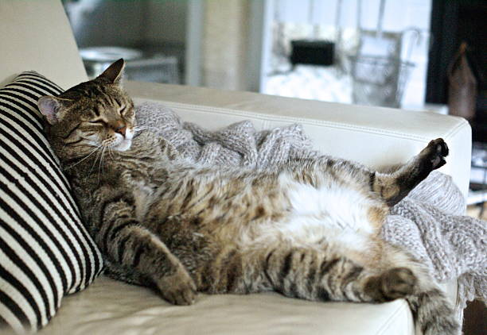

About Whiskers
Whiskesr is a fluffy, orange tabby cat with a playful personality. I adopted Whiskers from the local animal shelter 3 years ago, and we've been inseparable ever since.
He loves to chase after laser pointers, curl up in my lap while I work, and take long naps in the sun. Whiskers is not just a pet; he's a cherished member of my family.
Pictures of Whiskers
Fun Facts
- Whiskers' favorite treat is tuna fish
- He has a unique meow that sounds like a chirping bird.
- Whiskers is an excellent mouser and once caught a mouse twice his size!